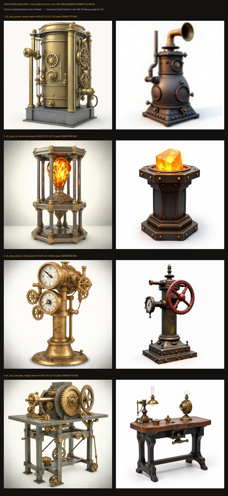

Mesmos 4 prompts e mesmas seeds do Batch-1 (v3). Guard VRAM 10 GB: 4/4 PASS no FLUX (pico 9.743–9.828 MiB, 42–62 s/img).
| Prop | Seed | SDXL-Turbo (0–5) | FLUX.1-dev FP8 (0–5) | Diferença principal |
|---|---|---|---|---|
| c5_prop_sirene_mestra | 442 | 4/5 | 5/5 | FLUX entregou corneta de sirene no topo + zero marca d'água |
| c5_prop_no_resincronia | 443 | 4/5 | 5/5 | FLUX entregou pedestal octogonal maciço + fundo 100% branco |
| c5_prop_valvula_ritmica | 42 | 3/5 | 5/5 | FLUX entregou volante vermelho + manômetro + fundo 100% branco |
| c5_prop_bancada_relogio | 42 | 3/5 | 5/5 | FLUX entregou tampo madeira + morsa + lamparina + fundo 100% branco |
| TOTAL | — | 14 / 20 | 20 / 20 | Vencedor provisório: FLUX.1-dev FP8 |
